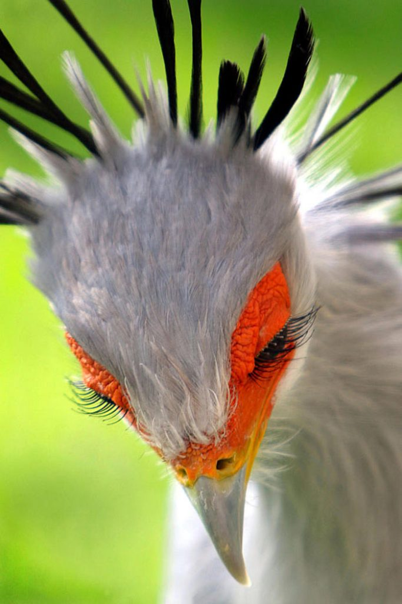

AVES

El pájaro secretario (Sagittarius serpentarius) es un ave africana de gran tamaño, que sorprende por ser la única de las aves rapaces que es principalmente terrestre.
Este pájaro pertenece a los accipitriformes, que incluye más o menos a toda ave rapaz diurna.Este ave rapaz solo se puede encontrar en las tierras al sur del Sáhara;
no es un ave migratoria y se puede encontrar en sabanas y praderas. Estas aves suelen estar relacionadas con árboles como la acacia, donde suelen dormir por la noche,
ya que es un ave muy diurna.
CARACTERISTICAS
- Tienen una longitud de 2,95-3,93 pies (0,9-1,2 m).
- Su peso está entre 5.07 y 9.41 libras (2.3-4.27 kilogramos).
- Tienen plumaje gris con algunas plumas blancas, plumas negras de vuelo en las alas, plumas de punta negra en una cresta en la parte posterior de la cabeza; Cara roja o naranja; Pico gris blanquecino; Patas largas rosadas.
- Vagan por largas millas en la búsqueda de alimento.
- Presentan principalmente características terrestres, pasando la mayor parte de sus horas activas en el suelo.